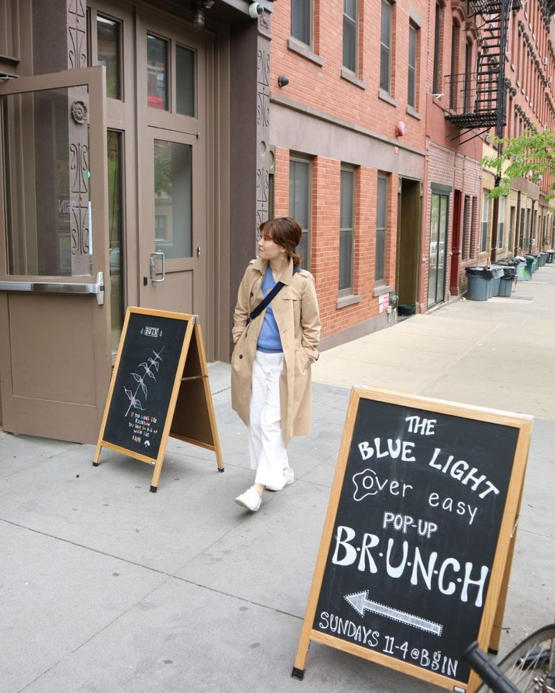
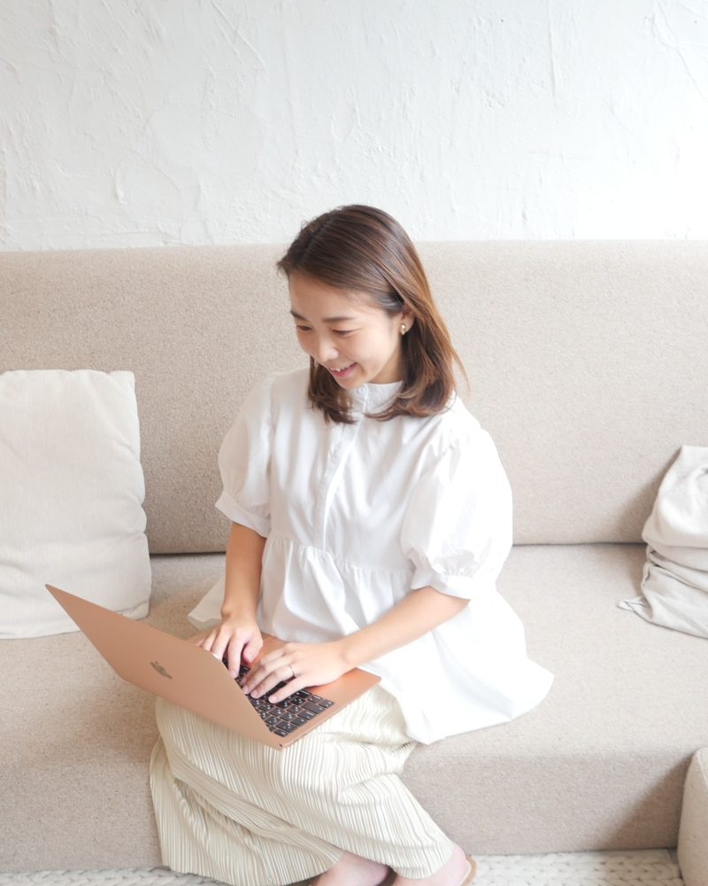

SAJI YUKA
プロジェクトマネジメント・業務改善
大手企業で16年。組織づくりから業務改善の定着までを推進。
大手人材サービス会社に16年間在籍し、組織マネジメントや業務改善に従事。新規部署の立ち上げでは、業務の仕組みや組織体制をゼロから構築してきました。
事業部の業務改善プロジェクトでは、情報管理システムの見直しから、新しい業務フローの導入・現場への定着までを推進。計画を立てるだけでなく、実際に機能する仕組みへと整えることを得意としています。
バックオフィス業務をお預かりする際には、まず全体を見渡して課題を整理し、優先順位やスケジュールを明確にします。進捗状況を共有しながら、計画から実行までを着実に進め、安心して任せられる体制づくりを支援しています。
現在はAIを活用した業務アプリの開発や、企業向けAI研修にも従事。クラウドサービスやAIの導入においても、導入自体を目的とせず、現場で継続的に活用できる仕組みづくりを重視しています。
経歴・実績
TAKIKAWA MISAKO
経理・総務・業務改善
担当者もルールもない経理を、毎月きちんと回る仕組みへ。
約7年間の経理実務経験を持ち、主に起業家やフリーランスなど、経理担当者や業務ルールが整っていない事業者の経理を数多く支援してきました。
領収書や入出金資料が整理されていない状態からでも、書類の管理方法や記帳のルールを整備。毎月決まったスケジュールで月次処理を完了できる仕組みをつくり、税理士への資料提出までを見据えた経理体制を構築します。
前職の営業事務では、社内の業務改善コンペで提案が採用・表彰された実績もあります。日々の業務を正確に進めるだけでなく、業務そのものを見直し、効率的な仕組みに変えることを得意としています。
現在はRPAやAIを活用した経理・事務業務の自動化にも取り組み、手作業の削減と業務効率化を支援しています。
経歴・資格

KUNAI NATSUMI
人事労務・業務改善
約11年の人事労務経験を活かし、属人化した業務を仕組みから改善。
約11年間にわたり、従業員約1,000名規模と約200名規模の企業で、人事労務業務に従事。給与計算・勤怠管理・年末調整など、正確性が求められる実務を幅広く担当してきました。
特に得意とするのは、特定の担当者しか把握していない業務を整理し、誰が担当しても正確に進められる仕組みをつくることです。手順書のない給与計算業務でも、現状の運用を丁寧に把握し、業務フローやチェック体制を整備します。
また、社内規程と実際の運用の違いを見直し、通勤手当の規程整備や短時間勤務制度の拡充など、現場の実態に合わせた制度改善にも携わってきました。
就業規則や法令との整合性にも目を配り、改善が必要な点を積極的に提案。専門的な判断が必要な場合には、課題を整理したうえで社会保険労務士へつなぎ、適切な対応を支援しています。
経歴・資格

HIRAIWA ANNA
デザイン・SNS運用・バックオフィス
相手の想いをくみ取り、デザイン・SNS運用から業務支援まで。
総合病院で約10年にわたり看護の現場に携わり、小児科・内科混合病棟や外来で患者とその家族を支えてきました。抗がん剤治療を受ける子どもたちに寄り添い、絵や遊びを通じて笑顔を引き出すなど、一人ひとりの気持ちをくみ取ることを大切にしてきました。
退職後は、自身も体調と向き合いながら、日々の気づきやイラストをSNSで発信。同じ悩みを持つ方々から「救われた」という声が届くようになりました。
育児の傍ら独学でデザインを学び、約4年間SNSマーケティングに従事。クリエイティブ制作からアカウント運用、インサイト分析に基づく改善まで、幅広く担当してきました。
現在は当社にて、データ管理や資料作成などのバックオフィス業務を担当し、他社からの業務も受託しています。看護の現場で培った「気づく力」と、デザインやSNS運用を通じて培った「伝わる形にする力」を活かし、さまざまな事情を抱えていても、自分らしく働き続けられる女性を増やすことを目指しています。
経歴・実績